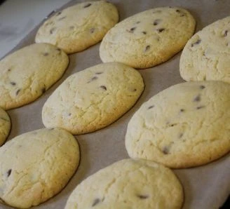

Cookies

Description
These delicious cookies are easy to cook and taste as good as the real Millies cookies, with a crisp outer layer and a gooey centre these treats are best eaten warm but last well...if they last that long!!!
Ingredients
- 125g butter, softened
- 100g light brown soft sugar
- 125g caster sugar
- 1 egg, lightly beaten
- 1 tsp vanilla extract
- 225g self-raising flour
- 1/2 tsp salt
- 200g chocolate chips
Steps
- Preheat the oven to 180 degrees celsius
- Cream butter and sugars, once creamed, combine in the egg and vanilla.
- Sift in the flour and salt, then the chocolate chips.
- Roll into walnut size balls, for a more homemade look, or roll into a long, thick sausage shape and slice to make neater looking cookies.
- Place on ungreased baking paper. If you want to have the real Millies experience then bake for just 7 minutes, till the cookies are just setting - the cookies will be really doughy and delicious. Otherwise cook for 10 minutes until just golden round the edges.
- Take out of the oven and leave to harden for a minute before transferring to a wire cooling rack. These are great warm, and they also store well, if they don't all get eaten straight away!
Home